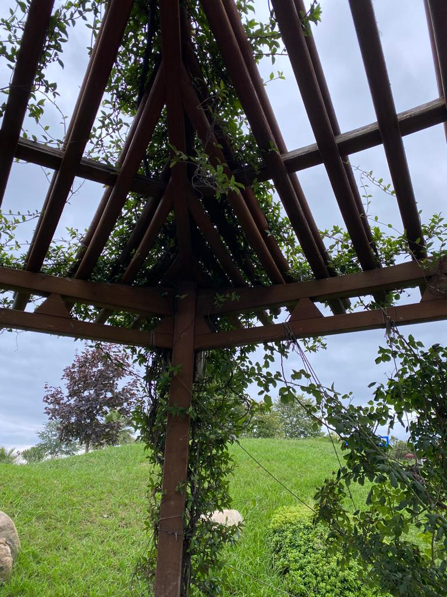
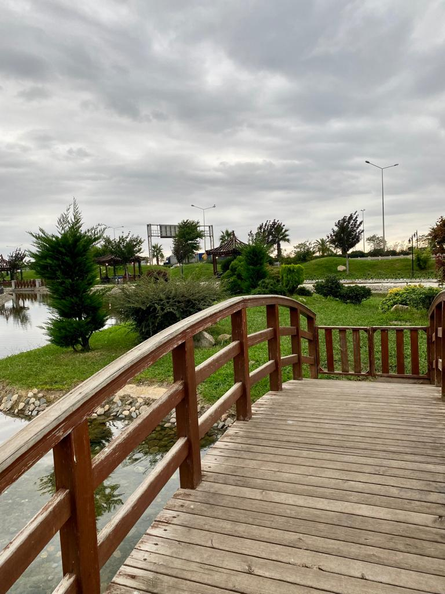

A journey to Uzungol, a vast breathtakingly beautiful lake surrounded by lush trees,
is recommended in most Trabzon travel guide books.
It takes 90 minutes to drive 100 kilometers from Trabzon.
Many Trabzon travel operators offer day trips to Uzungol,
but I chose to stay overnight in one of the area's classic
hand-built wooden hotels.
The most beautiful lake in Turkey is Uzungol, which means "long lake" and is located in the Trabzon region.
Uzungol is a little piece of Switzerland
in Turkey's Black Sea area, with a lakeside mosque and towering green mountains on all sides.
You could see a Eurasian lynx, roe deer, badger, or one of the many
different kinds of birds of prey here.
the location was next to the lake and the view was breathtakingly beautiful
  I really enjoyed this trip and I will never forget all the memories that I created, Trabzon trip was the the perfect trip you can ask for.
I really enjoyed everything there and I am planning to visit this city soon I highly
recoomend everyone to visit this Province